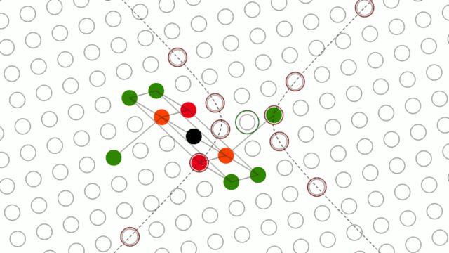
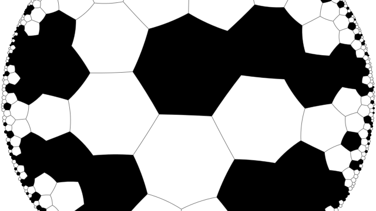

Programming and Math
Minkovski plane cellular automata simulator
 Simulator of cellular automata that live on the Minkovski plane - a pseudo-metric space, where the distance between two points is given by Δx²−Δy². It has hyperbolas instead of circles, and every cell has infinite number of neighbors. It is inspired by the "Dichronauts" novel by Greg Egan.
Hyperbolic cellular automata simulator

Simulator of cellular automata, acting on an regular tilingof the hyperbolic plane.
It supports arbitrary large configurations of cells, limited only by available memory.
Reversible Cellular Automata Simulator
Online (no installation needed) simulator of reversible cellular automata with Margolus neighborhood. Blog posts:
{kind=link}
- Introduction to reversible cellular automata and simulator.
- Single Rotation rule: remarkably simple and rich rule.
- Alternating rules and knightships
Spaceships of the Single Rotation rule
Single Rotation is a simple reversible cellular automaton, that operates on a field with Margolus neighborhood. Random initial conditions in this rule produce lots of different spaceships, some of them are in this catalog. See blog post for details.
Single Rotation cellular automaton with smooth interpolation
A simulator of the Single Rotation cellular automaton, that tracks positions of the cells and uses Lancsoz interpolation to add an intermediate frames. Its primary purpose is a nice visual effect, for experimenting with reversible cellular automata see online simulator.
Reversible CA Collider
A tool to automatically catalogize collisions of simple patterns in reversible cellular automata.
3D version of the Single Rotation simulator with smoothing
3-dimensonal version of the above application, using Web GL for visualization. It displays world lines of the moving cells, as a 3-dimensional curves.
- Sources: github.com/dmishin/singlerot-smooth, in the "3d" folder.
- Blog post
- Demonstration video
Reversible Cellular Automata applied to image
What if block reversible cellular automaton rule is applied to a raster image? The effect might be curious. This simulator lets you to watch the evolution of the image under reversible rule. The rule is:
- If a 2x2 block of pixeld contains 1 pixel of highly different color, then this block is rotated CV.
Simulator of cellular automata with 2 dimensions of time
Simulate elementary cellular automata with 1 spatial and 2 temporal dimensions. Simulation result is displayed as static 3d object, visualized with Tree.js. See also blog post about it.